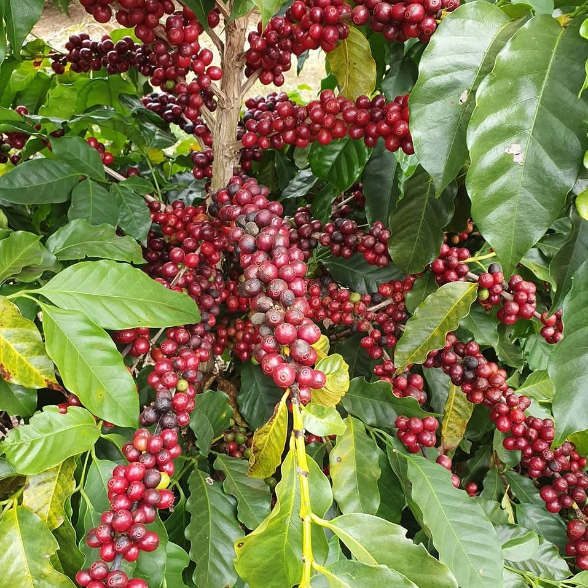
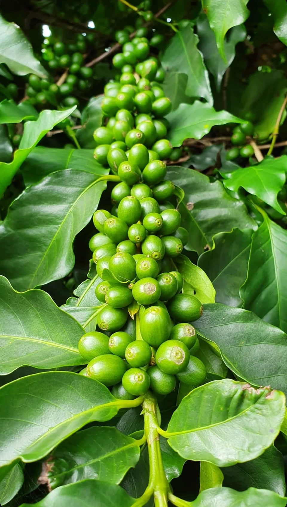
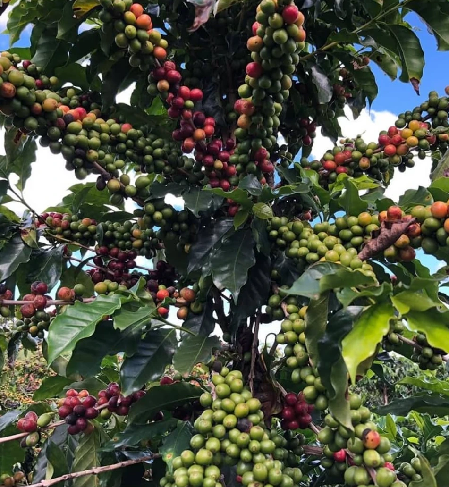
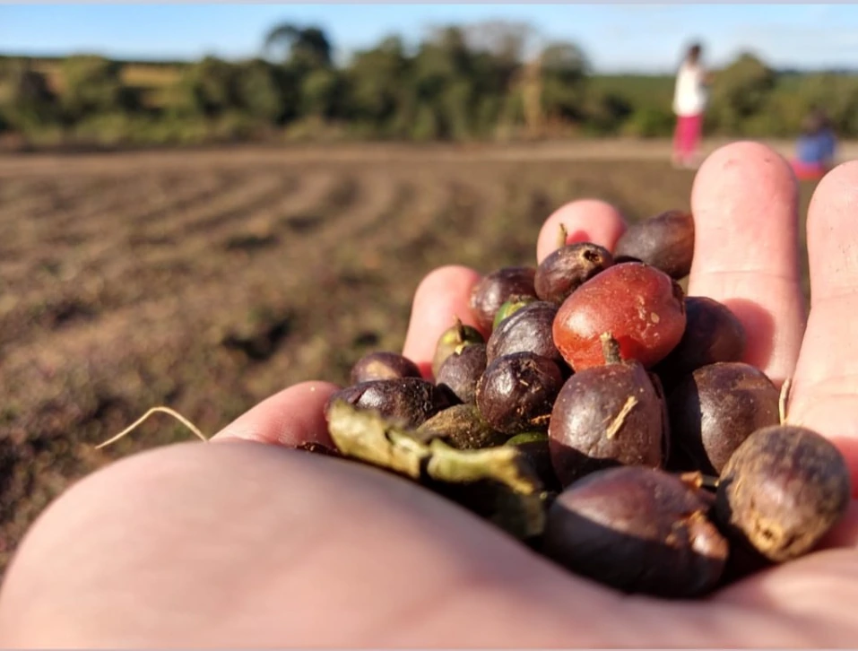
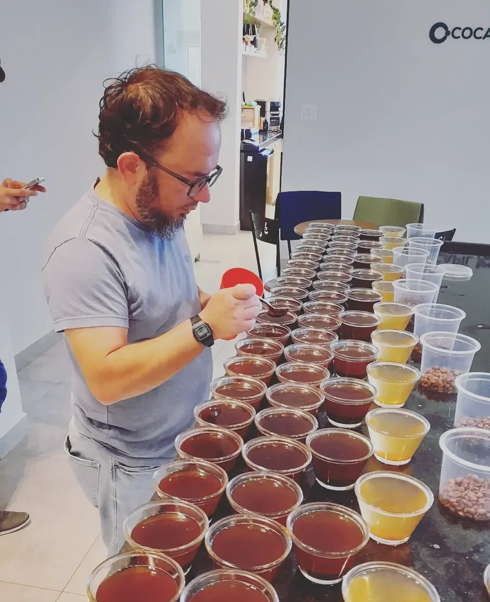
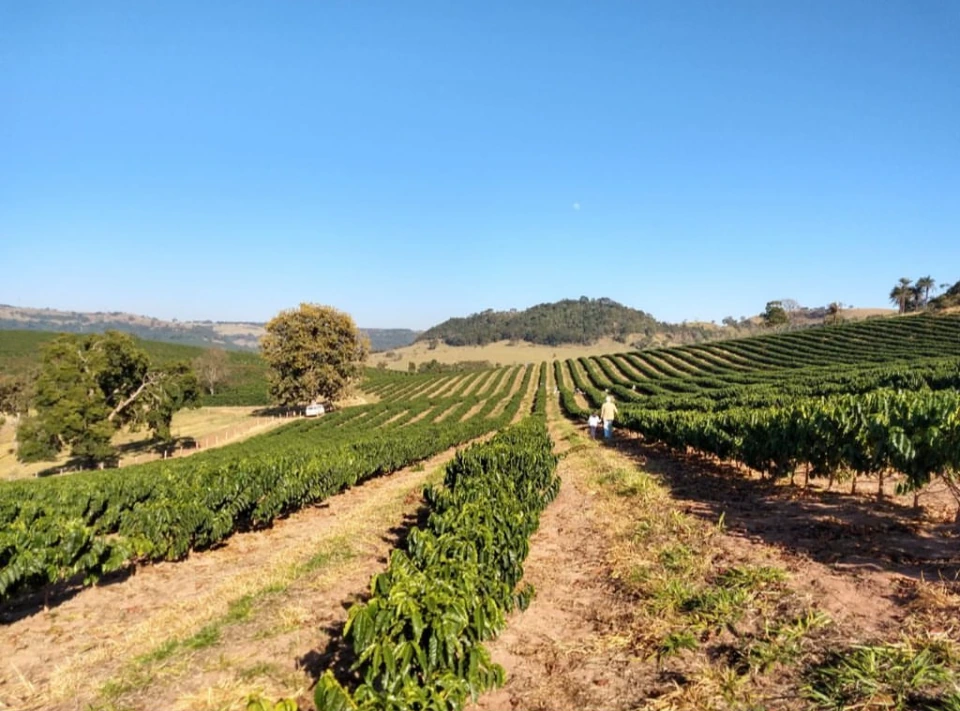
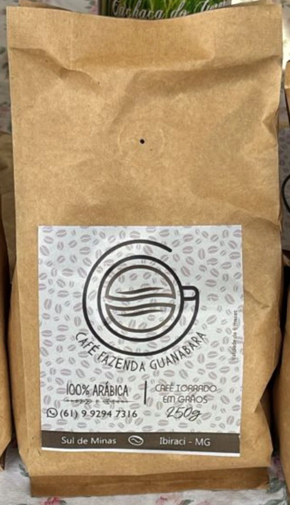

Verde
Os frutos se formam nos cachos e crescem verdes. Ainda não é hora de colher.
Café 100% arábica, torrado em grãos, cultivado pela Fazenda Guanabara no Sul de Minas.

Os frutos se formam nos cachos e crescem verdes. Ainda não é hora de colher.
A cor começa a virar. No mesmo galho, cada fruto amadurece no seu ritmo.
Cereja vermelha, brilhante e cheia. Este é o ponto da colheita.
Colhido e seco, o fruto escurece e segue para o beneficiamento e a torra.
A prova na xícara mostra o que o grão guarda, antes de ele chegar à sua casa.




A Fazenda Guanabara cultiva café arábica em Ibiraci, no Sul de Minas. As fileiras seguem as curvas do terreno e o café chega à embalagem com o nome de quem o cultiva.
Ver a fazenda no Instagram

Arraste para girar
O pedido abre uma conversa com a mensagem pronta. Valores e entrega você combina direto com a fazenda.
O café vem em grãos. Moa na hora de preparar e ajuste a quantidade pela água que você vai usar.
Molhe o filtro e deixe o pó florar por 30 segundos antes de seguir.